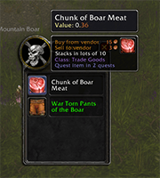
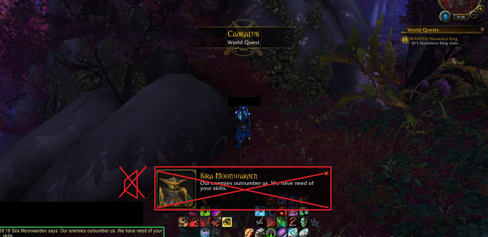

Addons

AutoLootPlus
Скачать

Используйте '/ bq', чтобы просмотреть справку и доступные параметры.
Вы можете включать или отключать дополнительные функции на лету, а также переключать функции блокировки специально для Ашрана, островных экспедиций и Назжатара.">
Используйте '/ bq', чтобы просмотреть справку и доступные параметры.
Вы можете включать или отключать дополнительные функции на лету, а также переключать функции блокировки специально для Ашрана, островных экспедиций и Назжатара.">
BeQuiet
Скачать
×